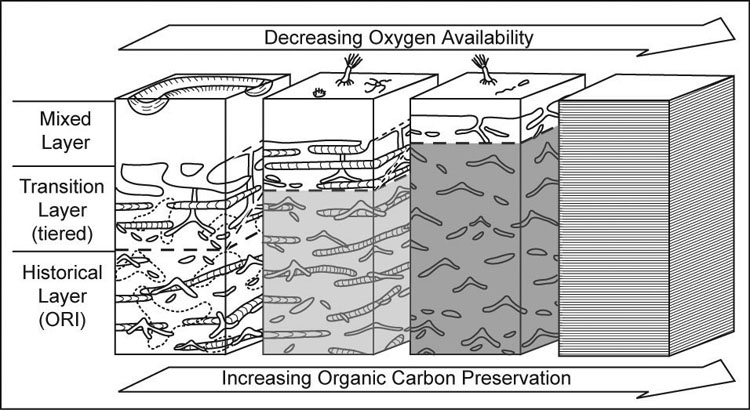

Marine Ichnofacies
There are a total of eight archetypal marine ichnofacies: Trypanites, Teredolites, Glossifungites, Psilonichnus, Skolithos, Cruziana, Zoophycos, and Nereites ichnofacies (Fig. 8; Ekdale et al., 1984; MacEachern et al., 2007a, 2007b). The classification of ichnofacies is based mostly on recurrent assemblages of trace fossils in a particular media type and consistency—softground, firmground, woodground, or hardground (Table 1). Softgrounds are either stable or shifting and unconsolidated media. Firmgrounds are semiconsolidated media that are firm but not lithified. Woodgrounds are such large concentrations of plant and woody material as peats and coals formed in place typically in coastal plain settings that are burrowed and bored by different organisms during transgressions. Hardgrounds are consolidated or fully lithified media and are associated with boring and bioeroding organisms. Firmgrounds can grade into hardgrounds as they become lithified through time. Three ichnofacies are defined based on the type of media in which trace fossils are found; these are also referred to as media-controlled ichnofacies. The Trypanites ichnofacies is characteristic is of such hardgrounds as rocky coasts, beachrock, reefs, bone beds, and coquina (Fig. 9). Bioerosion is an important process here and borings are the only type of trace fossils that are found in this ichnofacies. Trypanites ichnofacies may grade into the firmground Glossifungites ichnofacies, demonstrating that as the media becomes lithified, the type of organisms and behavior changes in order for the media to be occupied (Fig. 10). The Glossifungites ichnofacies is characteristic of such firm, unlithified sediments as compacted, dewatered mud and sand. Burial, compaction and dewatering, and subsequent erosional exhumation in shallow- to deep-water settings produce the firmground for this ichnofacies. This media type is also found in micritic sediments. The ichnofacies is a mixture of relict and overprinted ichnofossils. The Teredolites ichnofacies is characteristic of woodgrounds that represent omission surfaces developed on wood clasts, log jams, or peats and coals (Fig. 11). This ichnofacies is most common in such transitional settings as estuaries, delta plains, and back barrier environments. Five ichnofacies are characterized as softground trace-fossil assemblages found in transition marine to deep-water marine settings (MacEachern et al., 2007a). The Psilonichnus ichnofacies is characteristic of shifting media in supralittoral to upper littoral, moderate- to low-energy transitional zone settings between continental and marine depositional environments. This is a unique ichnofacies because it contains traces of terrestrial (rooted zones and burrow mottled strata) and marine organisms (crab, polychaete, and other types of burrowers). This ichnofacies is also representative of coastal settings represented by the beach backshore and dunes, washover fans, and supratidal flats. The Skolithos ichnofacies is characteristic of shifting media (slightly muddy to clean, well sorted sand) in the littoral zone in moderate- to high-energy conditions typical of beach foreshore and shoreface environments (Fig. 12). Other settings where the Skolithos ichnofacies may be found include point bars in estuarine fluvial systems, tidal deltas, and deep sea fans with similar media characteristics. The Cruziana ichnofacies is characteristic of shifting to stable media in such moderate- to low-energy offshore marine settings as shelves, epeiric seas, and littoral to sublittoral portions of estuaries, bays, lagoons, and tidal flats (Fig. 13). These settings typically experience minimal to considerable amounts of sedimentation. The Zoophycos ichnofacies is characteristic of such oxygen-deficient settings as restricted littoral to bathyal quiet-water environments (Fig. 14). This ichnofacies is typical in offshore environments below maximum storm wave base free of turbidity deposition and strong bottom currents. This ichnofacies is not always present or transition between shelve and abyssal environments if erosional deep-water contour currents are present. The Nereites ichnofacies is characteristic of such quiet, well-oxygenated settings as bathyal to abyssal environments with pelagic to hemipelagic sedimentation; this can be punctuated by turbiditic sedimentation (Fig. 15). This ichnofacies is also found in shallow quiet water, well-oxygenated settings with low sedimentation rates.
Tiering and Ichnofabrics
Tiering and ichnofabric analysis (Fig. 16–18) can be used together to understand the distribution and activity of organisms, depositional energy, sedimentation rate, and oxygenation of bottom water and the media. The interpretation of these conditions is useful for reconstructing ancient environments and understanding the sequence stratigraphic significance of strata. Tiering (Fig. 16–17) is defined as the depth to which organisms live and use different sediment processing activities to obtain nutrition from the media (Bromley, 1996). Tiering has increased in depth and the amount of sediment mixing from the Cambrian to the Permian, after which deep tiering and extensive, deep mixing of sediments had become common and widespread in marine environments (Droser and Bottjer, 1993; Morrow and Hasiotis, 2007). The shallowest tiers are referred to as the mixed layer where sediments typically are completely homogenized. Intermediate and deepest tiers are part of the transition layer where tiering is observable because sediments are not completely bioturbated or are overprinted by the next generation of deep burrowers. The historical layer is what is preserved by the upward aggradation of the seafloor that removes the transition layer from the zone of active and deepest bioturbation (Droser and Bottjer, 1993). Ichnofabrics (Fig. 18) are defined by the amount of sediment reworking by burrowing organisms and scored from 1 to 5 to represent no evidence of bioturbation to complete homogenization of the media overprinted by another generation of bioturbation; and index of 6 (Droser and Bottjer, 1986). Ichnofabric analysis has been used to interpret sedimentation rates, bottom water oxygenation, and depositional energy. It is also used to understand the presence of organic-rich sediments and the lack of bioturbation in those sediments. Ichnofabrics are related to trace fossil tiering in that it is the activity of organisms that bioturbated the media and create a new fabric composed of mix sediment and traces as well as the original sedimentary structures resulting from deposition.
Continental Ichnofacies vs. Ichnocoenoses

Continental trace fossils are better suited for classification as ichnocoenoses (Fig. 7). Continental ichnofacies—the Scoyenia, Mermia, and Coprinisphaera ichnofacies—are too broadly defined and poorly formulated based on what is being learned now from study of ancient and modern continental environments and tracemakers (e.g., Hasiotis, 2002, 2004, 2007; Hembree and Hasiotis, 2007; Hasiotis et al. 2007; Smith et al., 2008). Localized remnants of above- and below-ground, trace-making, ecological communities are preserved as trace-fossil associations or ichnocoenoses. An ichnocoenosis contains tiered trace fossils of arboreal (dwelling in trees), epigeal (living on the surface), and fossorial (living within the media) organisms that lived together and have unique relationships with the media. Ichnocoenoses are named for the most abundant or significant pedoecological-modifying behavior(s) in that ichnocoenosis and subenvironment. For example, if caddisfly cases are the dominant trace fossil for an ichnocoenosis, the trace-fossil association would be termed the Tektonargus ichnocoenosis. Caddisfly cases would denote an aquatic environment with gentle currents and abundant plant debris and other aquatic insects for the caddisfly larvae on which to feed. If crayfish burrows are the dominant trace fossil for an ichnocoenosis, the trace-fossil association would be termed the Camborygma ichnocoenosis. Crayfish burrows would denote a saturated zone within 1–5 m of the surface within seasonal, imperfectly drained media. If spherical termite nests are the dominant trace fossil, the ichnocoenosis would be termed the Termitichnus ichnocoenosis. This type of nest denotes areas with ample vegetative material for termites that expand their nests by building new nest centers connected by a gallery system. This approach produces a mosaic of juxtaposed ichnocoenoses, each with unique physical, chemical, and biologic properties characterized by the trace fossils present and by cross-cutting relationships with each other as well as the sedimentologic, pedogenic, and geochemical characters of the media. Continental ichnocoenoses, in general, indicate that diversity, depth, and tiering of trace fossils decreases toward shoreline and aquatic settings. Also important to note is that the organisms living in the upper and intermediate vadose zone of a soil or sediment are compressed out of the environment because the soil-moisture increases and water-table depth shallows towards periaquatic and aquatic environments.
Trace Fossils and Sequence Stratigraphy
Marine ichnofacies can be divided into two groups that typically represent (1) comformable packages of strata and (2) unconformity bounded packages of strata. Comformable strata typically contain ichnofacies typical of softgrounds: Psilonichnus, Skolithos, Cruziana, Zoophycos, and Nereites ichnofacies. Softground media and, thus, softground ichnofacies, are indicative of low to high rates of sediment accumulation in fully aquatic environments. Unconformity-bounded strata typically contain media-controlled ichnofacies: Trypanites, Teredolites, and Glossifungites ichnofacies. A hardground, woodground, or firmground delineates the presence of a stratigraphic hiatus formed by nondeposition or by erosion. A hiatus in the transitional zone may be generated by subaerial exposure or by subaqueous erosion, and can be colonized by either continental or marine organisms depending on the direction of sea-level change; the bioturbation is no longer viewed as being strictly marine in origin as previously thought for pre-Cenozoic deposits (Pemberton et al., 2004). Condensed sections mostly contain media-controlled ichnofacies since they become semilithified (firmgrounds) or lithified (hardgrounds). Conditions in which condensed sections form are in areas where submarine seafloor cementation is higher than minimal sedimentation rates. In some cases, though, condensed sections are softgrounds. The Trypanites ichnofacies generated by the erosional exhumation of fully lithified media is most typically associated with the colonization of that exhumation surface during transgressions. The transgression of the shoreline landward is also associated with transgressive tidal or wave ravinement of surfaces. The Trypanites ichnofacies may also be associated with maximum flooding surfaces produced in hardgrounds on inner shelf settings. The Teredolites ichnofacies is generated by the erosional exhumation of peat and lignite deposits in coastal plain settings proximal to the transition zone between the continental and marine realm. The exhumed portion of the more compacted and dewatered of coastal swamps delineates shoreline areas exposed during transgressive erosion and ravinement. The colonization of these woodgrounds is by marine organisms that produce Teredolites and Thalassinoides. It is thought that the occurrence of ripped up pieces of bored woodground found in incised valley fill deposits are indicative of fill during the transgression (MacEachern et al., 2007b). The Glossifungites ichnofacies is considered extremely important for identifying sequence boundaries and subaqueous erosional surfaces, also referred to Glossifungites surfaces. These can form in transitional zone tidal channels, shallow marine seafloor, and submarine valley and channel systems. The Glossifungites ichnofacies may be associated with erosionally exhumed media related to scouring during transgressive and regressive settings, subtidal and forced regressive settings, and incised valley and submarine canyon systems. The Glossifungites ichnofacies may also be related to maximum flooding surfaces in association with transgressive condensed sections or erosion (Van Wagoner et al., 1990; MacEachern et al. 2007b). Caution should be exerted, however, in that not all surfaces with the Glossifungites ichnofacies are indicative of major subaqueous or subaerial erosion and sequence boundaries. Most of these surfaces are reflect local compaction and erosion and have little benefit for stratigraphic correlation. Ichnofabric analysis has been used to in sequence stratigraphic analyses to interpret sedimentation rates, bottom water oxygenation, and depositional energy, which also reflect relative rises and falls in sea level, as well as the formation of parasequences, parasequence sets, and sequence boundaries (MacEachern and Pemberton, 2007).
Conclusions
Trace fossils are structures produced by organism behavior and can be used to interpret the depositional environment, sedimentation rate, oxygenation of bottom water and media, the groundwater profile, and the depositional energy in the system. In the marine realm trace fossils and trace fossil assemblages can be found in any depositional environment because the main controls on their distribution are sedimentation rate, bottom water oxygenation, and the depositional energy. One trace fossil may not be indicative of a particular environment or physicochemical condition; however, an assemblage or suite of trace fossils provides more robust interpretations of the genesis and history of the strata. For example, several of just a few trace fossils listed in Table 1 are found in more than one depositional setting under different conditions, however, the assemblages of trace fossils are unique to that setting, including the sedimentary structures and textures that comprise the strata. The typical succession of ichnofacies or ichnocoenoses in a Waltherian sense—a normal and expected vertical succession of facies that indicates lateral, juxtaposed facies patterns—reflects progradational, aggradational, or retrogradational stacking patterns of lithofacies, ichnofacies, and biofacies due to sediment supply, tectonics, climate, and sea-level change. Major a rise and fall in sea level or base level, however, disrupts the Waltherian distribution of ichnofacies and produces major basinward or landward shifts in lithofacies, ichnofacies, and biofacies—shifts of environments interpreted from these data. Associated with these changes are also the inherent changes in media consistency and texture, producing different media-controlled ichnofacies related to stratigraphic hiatuses superimposed over softground ichnofacies. Such changes indicative of major shifts in ichnofacies are important for identifying such hiatal surfaces as sequence boundaries, flooding surfaces, and maximum flooding surfaces, as well as parasequences and parasequence sets that shoal and coarsen upward and drowned by a relative sea-level rise or decrease in sediment accumulation rate.
References
Bromley, R.G., 1996. Trace Fossils: Biology, Taphonomy and Applications. Chapman and Hall, London.
Droser, M. L. and Bottjer, D. J., 1993. Trends and patterns of Phanerozoic ichnofabrics. Annual Reviews of Earth and Planetary Science, v. 21, p. 205-225.
Ekdale, A.A., Bromley, R.G., Pemberton, S.G., 1984. Ichnology: the use of trace fossils in sedimentology and stratigraphy. SEPM Short Course 15, 317 pp.
Hasiotis, S.T., 2002. Continental Trace Fossil Short Course Number 51. SEPM, Tulsa, Oklahoma, 132 pp.
Hasiotis, S. T., 2004. Reconnaissance of Upper Jurassic Morrison Formation ichnofossils, Rocky Mountain region, USA: environmental, stratigraphic, and climatic significance of terrestrial and freshwater ichnocoenoses. Sedimentary Geology, v. 167, p. 277-368.
Hasiotis, S. T., 2007. Continental ichnology: fundamental processes and controls on trace-fossil distribution. In, Miller, W. III (ed.), Trace Fossils—Concepts, Problems, Prospects, Elsevier Press, p. 268-284.
Hasiotis, S. T., Platt, B. F., Hembree, D. I., and Everhart, M., 2007a. The trace-fossil record of vertebrates. In, Miller, W. III (ed.), Trace Fossils—Concepts, Problems, Prospects, Elsevier Press, p. 196-218.
Hasiotis, S. T., Kraus, M. J., and Demko, T. M., 2007b. Climate controls on continental trace fossils. In, Miller, W. III (ed.), Trace Fossils—Concepts, Problems, Prospects, Elsevier Press, p. 172-195.
Hasiotis, S. T., Rogers, J. R., and Goldstein, R. H., 2002. Traces of Life: Macro- and Microscopic Evidence of Past and Present Biogenic Activity Potentially Preserved in Extraterrestrial Sediments and rocks. XXXIII Lunar and Planetary Science Conference, March 11-15, 2002, Houston, TX, Abstract 2054.pdf (CD-ROM).
Hembree, D. I., and Hasiotis, S. T. 2007. Paleosols and ichnofossils of the White River Formation of Colorado: Insight into soil ecosystems of the North American midcontinent during the Eocene-Oligocene transition. PALAIOS v. 22, p. 123-142.
MacEachern, J. A., Pemberton, S. G., Gingras, M. K., and Bann, K. L., 2007a. The ichnofacies paradigm: A fifty-year retrospective. In, Miller, W. III (ed.), Trace Fossils—Concepts, Problems, Prospects, Elsevier Press, p. 52-77.
MacEachern, J. A., Pemberton, S. G., Gingras, M. K., Bann, K. L., and Dafoe, L. T., 2007b. Uses of trace fossils in genetic stratigraphy. In, Miller, W. II (ed.), Trace Fossils—Concepts, Problems, Prospects, Elsevier Press, p. 52-77.
Miller, W. III (ed.), Trace Fossils—Concepts, Problems, Prospects, Elsevier Press, 611 pp.
Morrow, J. R., and Hasiotis, S. T., 2007. Infaunal response through mass-extinction episodes: predictive models and observed patterns. In, Miller, W. III (ed.), Trace Fossils—Concepts, Problems, Prospects, Elsevier Press, p. 575-598.
Pemberton, S. G., MacEachern, J. A., and Frey, R W., 1992. Trace fossil facies models: environmental and allostratigraphic significance. In, Walker, R. G. and James, N. P. (eds.), Facies Models—Response to Sea Level Change, Geological Association of Canada, p. 47-72.
Pemberton, S. G., MacEachern, J. A., and Saunders, T., 2004. Stratigraphic applications of substrate-specific ichnofacies: delineating discontinuities in the rock record. In, McIroy, D. (ed.), The Application of Ichnology to Palaeoenvironmental and Stratigraphic Analysis, Geological Society of London Special Publication 228, p. 29-62.
Seilacher, A., 1953. Studien zur palichnologie. I. uber die methoden der palichnologie. Neues Jahrb. Geologie Palaontologie Abhandlungen 96, 421-452.
Seilacher, A., 1955. Spuren und Lebensweise der Trilobiten. Abhandlungen der Akademie der wissenschaften und der Literatur, Mainz, methermatisch-naturwissenschaftliche Klasse, Jahrgang 1955, 342-72.
Smith, J. J., Hasiotis, S. T., and Kraus, M. J., Woody, D., 2008. Morphology and paleoenvironmental implications of adhesive meniscate burrows (AMB), Paleogene Willwood Formation, Bighorn Basin, Wyoming. Journal of Paleontology, v. 82(2), p. 267-278.
Woese, C. R., Kandler, O., and Wheelis, M. L., 1990. Towards a natural system of organisms: Proposal for the domains Archaea, Bacteria, and Eucarya. Proceedings to the National. Academy of Sciences. USA v. 87, p. 4576-4579.